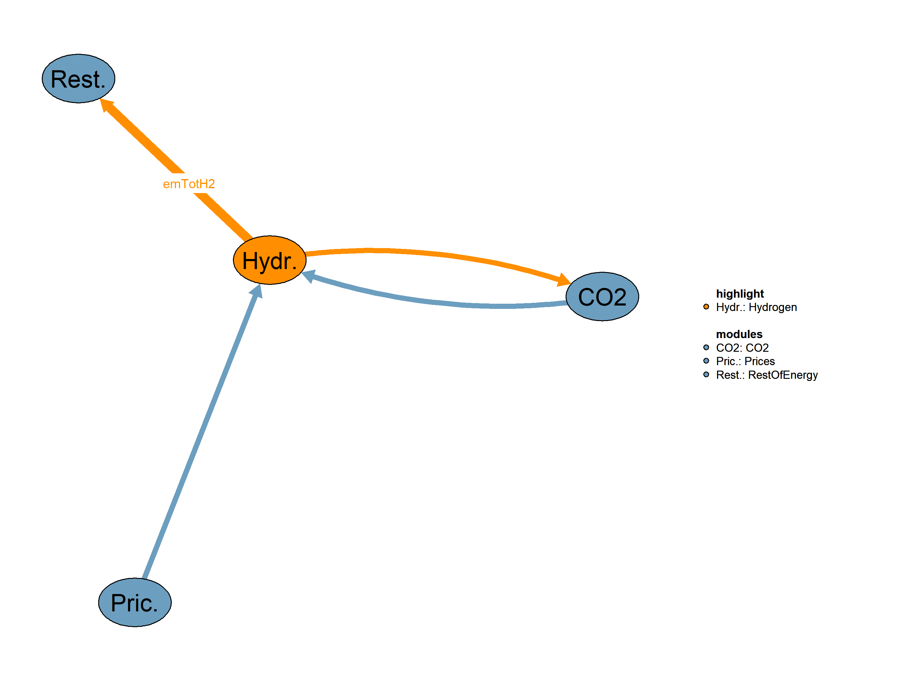

This is the Hydrogen module.

| Description | Unit | A | |
|---|---|---|---|
| VMVCstCO2SeqCsts (allCy, YTIME) |
Cost curve for CO2 sequestration costs | \(US\$2015/tn of CO2 sequestrated\) | x |
| VMVPriceFuelSubsecCarVal (allCy, SBS, EF, YTIME) |
Fuel prices per subsector and fuel | \(k\$2015/toe\) | x |
| Description | Unit | |
|---|---|---|
| VMVConsFuelTechH2Prod (allCy, H2TECH, EF, YTIME) |
Fuel consumption by hydrogen production technology in Mtoe | |
| VMVDemTotH2 (allCy, YTIME) |
Hydrogen production requirement in Mtoe for meeting final demand | |
| VMVProdH2 (allCy, H2TECH, YTIME) |
Hydrogen Production by technology in Mtoe |
This is the legacy realization of the Hydrogen module.
sets
H2TECH "Hydrogen production technologies"
/
gsr "gas steam reforming"
gss "gas steam reforming with CCS"
weg "water electrolysis from grid power"
bgfl "biomass gasification large scale"
bgfls "biomass gasification large scale with CCS"
/
INFRTECH "Hydrogen storage and distribution technologies"
/
tpipa "turnpike pipeline used also as a storage medium"
hpipi "high pressure for industry"
hpipu "high pressure for urban"
mpipu "medium pressure for urban"
lpipu "low pressure for urban"
mpips "medium pressure for service stations of length of 2km"
ssgg "service stations gaseous H2"
/
PIPES(INFRTECH) "Pipelines"
/
tpipa "turnpike pipeline used also as a storage medium"
hpipi "high pressure for industry"
hpipu "high pressure for urban"
mpipu "medium pressure for urban"
lpipu "low pressure for urban"
mpips "medium pressure for service stations"
/
H2STATIONS(INFRTECH) "Service stations for hydrogen powered cars"
/
ssgg "service stations gas"
/
INFRTECHtoEF(INFRTECH,EF) "Type of energy consumed onsite for the operation of the infrastructure technology"
/
hpipu.h2f
ssgg.elc
/
H2NETWORK(INFRTECH,INFRTECH)
/
TPIPA.(HPIPI,HPIPU)
HPIPU.MPIPU
MPIPU.(MPIPS,LPIPU)
MPIPS.SSGG
/
H2EFFLOOP(INFRTECH)
/
HPIPI
HPIPU
MPIPU
MPIPS
LPIPU
SSGG
/
H2SBS(SBS) "Final demand sectors consuming hydrogen for energy purposes"
/
PG
IS
NF
BM
CH
PP
EN
TX
FD
OE
OI
SE
AG
HOU
PC
GU
PA
PT
GT
/
H2INFRSBS(INFRTECH,SBS) "Infrustructure required by demand sector"
/
TPIPA.(PG,IS,NF,BM,CH,PP,EN,TX,FD,OE,OI,SE,AG,HOU,PC,GU,PA,PT,GT)
LPIPU.(SE,AG,HOU)
(SSGG,MPIPS).(PC,GU,PA,PT,GT)
(MPIPU,HPIPU).(SE,AG,HOU,PC,GU,PA,PT,GT)
HPIPI.(PG,IS,NF,BM,CH,PP,EN,TX,FD,OE,OI)
/
H2INFRDNODES(INFRTECH)
/
HPIPI
LPIPU
SSGG
/
H2TECHEFtoEF(H2TECH,EF) "Mapping between production technologies and fuels"
/
(gsr,gss).ngs !! ,smr
(bgfls,bgfl).BMSWAS !! bpy,bgfs,
weg.ELC
/
H2PRODEF(EF) "Fuels used for hydrogen production"
/
ngs
hcl
bmswas
sol
nuc
elc
wnd
rfo
/
$ontext
H2TECHREN(H2TECH) "Renewable hydrogen production technologies"
/
sht
wew
/
$offtext
H2CCS(H2TECH) "Hydrogen production technologies equipped with CCS facility"
/
gss "gas steam reforming with CCS"
bgfls "biomass gasification large scale with CCS"
/
H2NOCCS(H2TECH) "Hydrogen production technologies without CCS but with corresponding option with CCS"
/
gsr
bgfl
/
H2CCS_NOCCS(H2TECH,H2TECH) "Mapping between hydrogen technologies with and without CCS facility"
/
gss.gsr
bgfls.bgfl
/
H2TECHPM(H2TECH) "Technologies for which premature replacement is active"
/
gsr
/
ARELAST "Set containing the names of the elasticities used in area covered by H2 logistic fucntion"
/
B "parameter controlling the speed to the transition to hydrogen economy"
mid "mid point after which the hydrogen economy is taking off"
/
ECONCHARHY "Technical - Economic characteristics for demand technologies Hydrogen"
/
IC
FC
VC
EFF
SELF
AVAIL
LFT
H2KMTOE
mpips
lpipu
mpipu
AREA
MAXAREA
B
mid
CR
/
INFRTECHLAB(INFRTECH,ECONCHARHY)
/
mpips.mpips
lpipu.lpipu
mpipu.mpipu
/
ALIAS (H2TECH2,H2TECH);
ALIAS (INFRTECH3,INFRTECH2, INFRTECH);Variables
VGapShareH2Tech1(allCy, H2TECH, YTIME) "Shares of H2 production technologies in new market competition 1"
VGapShareH2Tech2(allCy, H2TECH, YTIME) "Shares of H2 production technologies in new market competition 2"
VCapScrapH2ProdTech(allCy, H2TECH, YTIME) "Decommissioning of capacity by H2 production technology"
VPremRepH2Prod(allCy, H2TECH, YTIME) "Premature replacement of H2 production technologies"
VScrapLftH2Prod(allCy, H2TECH, YTIME) "Scrapping of equipment due to lifetime (normal scrapping)"
VDemGapH2(allCy, YTIME) "Demand for H2 to be covered by new equipment in mtoe"
VCostProdH2Tech(allCy, H2TECH, YTIME) "Hydrogen production cost per technology in Euro per toe of hydrogen"
VCostVarProdH2Tech(allCy, H2TECH, YTIME) "Variable cost (including fuel cost) for hydrogen production by technology in Euro per toe"
VShareCCSH2Prod(allCy, H2TECH, YTIME) "Share of CCS technology in the decision tree between CCS and no CCS"
VShareNoCCSH2Prod(allCy, H2TECH, YTIME) "Share of technology without CCS in the decision tree between CCS and no CCS"
VAcceptCCSH2Tech(allCy, YTIME) "Acceptance of investment in CCS technologies"
VConsFuelH2Prod(allCy, EF, YTIME) "Total fuel consumption for hydrogen production in Mtoe"
VCostProdCCSNoCCSH2Prod(allCy, H2TECH, YTIME) "Production cost of the composite technology with and without CCS in Euro per toe"
VCostAvgProdH2(allCy, YTIME) "Average production cost of hydrogen in Euro per toe"Infrastructure Variables
VH2InfrArea(allCy, YTIME) "Number of stylised areas covered by H2 infrastructure"
VDelivH2InfrTech(allCy, INFRTECH, YTIME) "Hydrogen delivered by infrastructure technology in Mtoe"
VInvNewReqH2Infra(allCy, INFRTECH, YTIME) "New infrastructure requirements in Mtoe of delivered hydrogen"
VH2Pipe(allCy, INFRTECH, YTIME) "Required capacity to meet the new infrastructure requirements"
!! - km of pipelines
!! - number of service stations
VCostInvTechH2Infr(allCy, INFRTECH, YTIME) "Investment cost of infrastructure by technology in Million Euros (MEuro) for meeting the new infrastructure requirements"
VCostInvCummH2Transp(allCy, INFRTECH, YTIME) "Average cost of infrastructure Euro per toe"
VCostTechH2Infr(allCy, INFRTECH, YTIME) "Marginal cost by infrastructure technology in Euro"
VTariffH2Infr(allCy, INFRTECH, YTIME) "Tarrif paid by the final consumer for using the specific infrastructure technology in Euro per toe annual"
VPriceH2Infr(allCy, SBS, YTIME) "Hydrogen distribution and storage price paid by final consumer in Euro per toe annual"
VCostTotH2(allCy, SBS, YTIME) "Total Hydrogen Cost Per Sector in Euro per toe"*** Miscellaneous
VDemSecH2(allCy, SBS, YTIME) "Demand for H2 by sector in mtoe"Interdependent Variables
VMVDemTotH2(allCy, YTIME) "Hydrogen production requirement in Mtoe for meeting final demand"
VMVProdH2(allCy, H2TECH, YTIME) "Hydrogen Production by technology in Mtoe"
VMVConsFuelTechH2Prod(allCy, H2TECH, EF, YTIME) "Fuel consumption by hydrogen production technology in Mtoe"
;
Equations
QGapShareH2Tech1(allCy, H2TECH, YTIME) "Equation for calculating the shares of technologies in hydrogen gap using Weibull equations 1"
QGapShareH2Tech2(allCy, H2TECH, YTIME) "Equation for calculating the shares of technologies in hydrogen gap using Weibull equations 2"
QCapScrapH2ProdTech(allCy, H2TECH, YTIME) "Equation for decommissioning of capacity by H2 production technology"
QPremRepH2Prod(allCy, H2TECH, YTIME) "Equation for premature replacement of H2 production technologies"
QScrapLftH2Prod(allCy, H2TECH, YTIME) "Equation for scrapping of equipment due to lifetime (normal scrapping)"
QDemGapH2(allCy, YTIME) "Equation for gap in hydrogen demand"
QCostProdH2Tech(allCy, H2TECH, YTIME) "Equation for hydrogen production cost per technology"
QCostVarProdH2Tech(allCy, H2TECH, YTIME) "Equation for variable cost (including fuel cost) for hydrogen production by technology in Euro per toe"
QShareCCSH2Prod(allCy, H2TECH, YTIME) "Equation for share of CCS technology in the decision tree between CCS and no CCS"
QShareNoCCSH2Prod(allCy, H2TECH, YTIME) "Equation for share of technology without CCS in the decision tree between CCS and no CCS"
QAcceptCCSH2Tech(allCy, YTIME) "Equation for acceptance in CCS technologies"
QConsFuelH2Prod(allCy, EF, YTIME) "Equation for total fuel consumption for hydrogen production"
QCostProdCCSNoCCSH2Prod(allCy, H2TECH, YTIME) "Equation for calculating the production cost of the composite technology with and without CCS"
QCostAvgProdH2(allCy, YTIME) "Equation for average production cost of hydrogen in Euro per toe"Infrastructure Equations
QH2InfrArea(allCy, YTIME) "Equation for infrastructure area"
QDelivH2InfrTech(allCy, INFRTECH, YTIME) "Equation for hydrogen delivered by infrastructure technology in Mtoe"
QInvNewReqH2Infra(allCy, INFRTECH, YTIME) "Equation for calculating the new requirements in infrastructure in Mtoe"
QH2Pipe(allCy, INFRTECH, YTIME) "Equation for km per pipeline"
QCostInvTechH2Infr(allCy, INFRTECH, YTIME) "Equation for infrastructure investment cost in Euro by technology"
QCostInvCummH2Transp(allCy, INFRTECH, YTIME) "Equation for cumulative investment cost by infrastructure technology"
QCostTechH2Infr(allCy, INFRTECH, YTIME) "Equation for marginal cost by infrastructure technology in Euro"
QTariffH2Infr(allCy, INFRTECH, YTIME) "Equation for calculating the tariff paid by the final consumer for using the specific infrastructure technology"
QPriceH2Infr(allCy, SBS, YTIME) "Equation for calulcating the hydrogen storage and distribution price by final consumer"
QCostTotH2(allCy, SBS, YTIME) "Equation of total hydrogen cost Per Sector"*** Miscellaneous Interdependent Equations
Q05DemTotH2(allCy, YTIME) "Equation for total hydrogen demand in a country in Mtoe"
Q05ProdH2(allCy, H2TECH, YTIME) "Equation for H2 production by technology"
Q05ConsFuelTechH2Prod(allCy, H2TECH, EF, YTIME) "Equation for fuel consumption by technology for hydrogen production"
;
Scalars
sAreaStyle "stylised area in km2" /3025/
sSalesH2Station "annual sales of a hydrogen service station in ktoe" /2.26/
sLenH2StationConn "length of pipes connection service stations with the ring in km per station" /2/
sDelivH2Turnpike "stylised annual hydrogen delivery in turnpike pipeline in ktoe" /275/
;This equation calculates the total hydrogen demand in the system. It takes into account the overall need for hydrogen across sectors like transportation, industry, and power generation, adjusted for any transportation losses or distribution inefficiencies.
Q05DemTotH2(allCy,YTIME)$(TIME(YTIME)$(runCy(allCy)))..
VMVDemTotH2(allCy,YTIME)
=E=
sum(SBS$H2SBS(SBS), VDemSecH2(allCy,SBS, YTIME)/
prod(INFRTECH$H2INFRSBS(INFRTECH,SBS) , iEffH2Transp(allCy,INFRTECH,YTIME)*(1-iConsSelfH2Transp(allCy,INFRTECH,YTIME)))) !! increase the demand due to transportation losses
;This equation defines the amount of hydrogen production capacity that is scrapped due to the expiration of the useful life of plants. It considers the remaining lifetime of hydrogen production facilities and the impact of past production gaps.
QScrapLftH2Prod(allCy,H2TECH,YTIME)$(TIME(YTIME)$(runCy(allCy)))..
VScrapLftH2Prod(allCy,H2TECH,YTIME)
=E=
(
VGapShareH2Tech1(allCy,H2TECH,YTIME-iProdLftH2(H2TECH,YTIME))*VDemGapH2(allCy,YTIME-iProdLftH2(H2TECH,YTIME))
/VMVProdH2(allCy,H2TECH,YTIME-1)
)$(ord(YTIME)>17+iProdLftH2(H2TECH,YTIME)) + 0.1
;This equation models the premature replacement of hydrogen production capacity. It adjusts for the need to replace aging or inefficient hydrogen production technologies before their expected end of life based on economic factors such as cost, technological progress, and demand shifts.
QPremRepH2Prod(allCy,H2TECH,YTIME)$(TIME(YTIME)$(runCy(allCy)))..
VPremRepH2Prod(allCy,H2TECH,YTIME)
=E=
1-
(
VCostVarProdH2Tech(allCy,H2TECH,YTIME)**(-iWBLGammaH2Prod(allCy,YTIME))
/
(
(sum(H2TECH2,
VGapShareH2Tech1(allCy,H2TECH2,YTIME)*(1/iAvailH2Prod(H2TECH,YTIME)*VCostProdH2Tech(allCy,H2TECH2,YTIME)
+(1-1/iAvailH2Prod(H2TECH,YTIME))*VCostVarProdH2Tech(allCy,H2TECH2,YTIME)))
-VGapShareH2Tech1(allCy,H2TECH,YTIME)*(1/iAvailH2Prod(H2TECH,YTIME)*VCostProdH2Tech(allCy,H2TECH,YTIME)
+(1-1/iAvailH2Prod(H2TECH,YTIME))*VCostVarProdH2Tech(allCy,H2TECH,YTIME))
)**(-iWBLGammaH2Prod(allCy,YTIME))
+VCostVarProdH2Tech(allCy,H2TECH,YTIME)**(-iWBLGammaH2Prod(allCy,YTIME))
)
)$H2TECHPM(H2TECH)
;This equation calculates the total hydrogen production capacity that is scrapped as part of the premature replacement and normal plant life cycle. It links the scrapped capacity to the overall age distribution and retirement schedule of hydrogen production technologies.
QCapScrapH2ProdTech(allCy,H2TECH,YTIME)$(TIME(YTIME)$(runCy(allCy)))..
VCapScrapH2ProdTech(allCy,H2TECH,YTIME)
=E=
1-(1-VScrapLftH2Prod(allCy,H2TECH,YTIME))*(1-VPremRepH2Prod(allCy,H2TECH,YTIME))
;The hydrogen demand gap equation defines the difference between the total hydrogen demand (calculated in Q05DemTotH2) and the actual hydrogen production capacity. It ensures that the gap value is non-negative, preventing overproduction or underproduction of hydrogen.
QDemGapH2(allCy, YTIME)$(TIME(YTIME)$(runCy(allCy)))..
VDemGapH2(allCy, YTIME)
=E=
( VMVDemTotH2(allCy,YTIME) - sum(H2TECH,(1-VCapScrapH2ProdTech(allCy,H2TECH,YTIME))*VMVProdH2(allCy,H2TECH,YTIME-1))
+ 0 +
SQRT( SQR(VMVDemTotH2(allCy,YTIME) - sum(H2TECH,(1-VCapScrapH2ProdTech(allCy,H2TECH,YTIME))*VMVProdH2(allCy,H2TECH,YTIME-1))-0) + SQR(1E-4) )
)/2
;This equation calculates the production costs of hydrogen, including both fixed costs (e.g., capital investment) and variable costs (e.g., operational expenses). The costs are typically differentiated by hydrogen production technologies such as electrolysis, steam methane reforming (SMR), or coal gasification.
QCostProdH2Tech(allCy,H2TECH,YTIME)$(TIME(YTIME)$(runCy(allCy)))..
VCostProdH2Tech(allCy,H2TECH,YTIME)
=E=
(iDisc(allCy,"H2P",YTIME)*exp(iDisc(allCy,"H2P",YTIME)* iProdLftH2(H2TECH,YTIME))/(exp(iDisc(allCy,"H2P",YTIME)*iProdLftH2(H2TECH,YTIME))-1)*
iCostCapH2Prod(allCy,H2TECH,YTIME)+iCostFOMH2Prod(allCy,H2TECH,YTIME))/257/365*1000000/iAvailH2Prod(H2TECH,YTIME) +
iCostVOMH2Prod(allCy,H2TECH,YTIME) + VCostVarProdH2Tech(allCy,H2TECH,YTIME)
;This equation models the variable costs associated with hydrogen production, factoring in fuel prices (e.g., electricity or natural gas), CO₂ emission costs, and the efficiency of the production technology. This helps to understand the fluctuating costs based on market conditions.
QCostVarProdH2Tech(allCy,H2TECH,YTIME)$(TIME(YTIME)$(runCy(allCy)))..
VCostVarProdH2Tech(allCy,H2TECH,YTIME)
=E=
sum(EF$H2TECHEFtoEF(H2TECH,EF), (VMVPriceFuelSubsecCarVal(allCy,"H2P",EF,YTIME)*1e3+
iCaptRateH2Prod(allCy,H2TECH,YTIME)*iCo2EmiFac(allCy,"H2P",EF,YTIME)*VMVCstCO2SeqCsts(allCy,YTIME)+
(1-iCaptRateH2Prod(allCy,H2TECH,YTIME))*iCo2EmiFac(allCy,"H2P",EF,YTIME)*
(sum(NAP$NAPtoALLSBS(NAP,"H2P"),VCarVal(allCy,NAP,YTIME))))
/iEffH2Prod(allCy,H2TECH,YTIME)
)!!$(not H2TECHREN(H2TECH))
;This equation models the acceptance of carbon capture and storage (CCS) technologies in hydrogen production. It evaluates the economic feasibility of adding CCS to the hydrogen production process, considering cost, environmental policies, and technology readiness.
QAcceptCCSH2Tech(allCy,YTIME)$(TIME(YTIME)$(runCy(allCy)))..
VAcceptCCSH2Tech(allCy,YTIME)
=E=
iWBLGammaH2Prod(allCy,YTIME)*5+25*EXP(-0.06*((sum(NAP$NAPtoALLSBS(NAP,"H2P"),VCarVal(allCy,NAP,YTIME -1)))))
;This equation determines the share of hydrogen produced using CCS technologies compared to those produced without CCS. The share is calculated based on relative costs, technological feasibility, and policy incentives supporting CCS.
QShareCCSH2Prod(allCy,H2TECH,YTIME)$(TIME(YTIME) $H2CCS(H2TECH) $(runCy(allCy)))..
VShareCCSH2Prod(allCy,H2TECH,YTIME)
=E=
1.5 *
VCostProdH2Tech(allCy,H2TECH,YTIME)**(-VAcceptCCSH2Tech(allCy,YTIME)) /
(
1.5 *
VCostProdH2Tech(allCy,H2TECH,YTIME)**(-VAcceptCCSH2Tech(allCy,YTIME)) +
sum(H2TECH2$H2CCS_NOCCS(H2TECH,H2TECH2),
1 *
VCostProdH2Tech(allCy,H2TECH2,YTIME)**(-VAcceptCCSH2Tech(allCy,YTIME)))
)
;Similar to QShareCCSH2Prod, this equation models the share of hydrogen produced without CCS technologies. It calculates the proportion of production from non-CCS methods like electrolysis or SMR without CO₂ capture.
QShareNoCCSH2Prod(allCy,H2TECH,YTIME)$(TIME(YTIME) $H2NOCCS(H2TECH) $(runCy(allCy)))..
VShareNoCCSH2Prod(allCy,H2TECH,YTIME)
=E=
1 - sum(H2TECH2$H2CCS_NOCCS(H2TECH2,H2TECH) , VShareCCSH2Prod(allCy,H2TECH2,YTIME) )
;This equation computes the weighted average production cost of hydrogen, incorporating both CCS and non-CCS production methods. It provides an overall cost perspective, helping to assess which production methods dominate the market based on cost-efficiency.
QCostProdCCSNoCCSH2Prod(allCy,H2TECH,YTIME)$(TIME(YTIME) $H2NOCCS(H2TECH) $(runCy(allCy))) ..
VCostProdCCSNoCCSH2Prod(allCy,H2TECH,YTIME)
=E=
VShareNoCCSH2Prod(allCy,H2TECH,YTIME)*VCostProdH2Tech(allCy,H2TECH,YTIME)+
sum(H2CCS$H2CCS_NOCCS(H2CCS,H2TECH), VShareCCSH2Prod(allCy,H2CCS,YTIME)*VCostProdH2Tech(allCy,H2CCS,YTIME))
;This equation calculates the market share of different hydrogen production technologies, considering factors like cost competitiveness, policy support, and fuel availability. It adjusts market shares based on technological performance and shifting cost dynamics.
QGapShareH2Tech2(allCy,H2TECH,YTIME)$(TIME(YTIME)$(runCy(allCy)))..
VGapShareH2Tech2(allCy,H2TECH,YTIME)
=E=
(
(VCostProdH2Tech(allCy,H2TECH,YTIME)$(not H2NOCCS(H2TECH)) + VCostProdCCSNoCCSH2Prod(allCy,H2TECH,YTIME)$H2NOCCS(H2TECH))**(-iWBLGammaH2Prod(allCy,YTIME))
/
sum(H2TECH2$(not H2CCS(H2TECH2)) ,
(VCostProdH2Tech(allCy,H2TECH2,YTIME)$(not H2NOCCS(H2TECH2)) + VCostProdCCSNoCCSH2Prod(allCy,H2TECH2,YTIME)$H2NOCCS(H2TECH2))**(-iWBLGammaH2Prod(allCy,YTIME)))
)$(not H2CCS(H2TECH))
+
sum(H2NOCCS$H2CCS_NOCCS(H2TECH,H2NOCCS), VGapShareH2Tech2(allCy,H2NOCCS,YTIME))$H2CCS(H2TECH)
;This equation further adjusts the market share of hydrogen technologies, particularly considering the relative competitiveness between CCS and non-CCS technologies. It helps to model the transition between different production technologies over time.
QGapShareH2Tech1(allCy,H2TECH,YTIME)$(TIME(YTIME)$(runCy(allCy)))..
VGapShareH2Tech1(allCy,H2TECH,YTIME)
=E=
(VGapShareH2Tech2(allCy,H2TECH,YTIME)$((not H2CCS(H2TECH)) $(not H2NOCCS(H2TECH)))
+
VGapShareH2Tech2(allCy,H2TECH,YTIME)*(VShareCCSH2Prod(allCy,H2TECH,YTIME)$H2CCS(H2TECH) + VShareNoCCSH2Prod(allCy,H2TECH,YTIME)$H2NOCCS(H2TECH))
)
;This equation defines the actual hydrogen production levels, considering both scrapped capacity and the demand gap. It allocates production from different technologies to meet the overall demand, adjusting for changes in capacity and technology availability.
Q05ProdH2(allCy,H2TECH,YTIME)$(TIME(YTIME)$(runCy(allCy)))..
VMVProdH2(allCy,H2TECH,YTIME)
=E=
0.0001+(1-VCapScrapH2ProdTech(allCy,H2TECH,YTIME))*VMVProdH2(allCy,H2TECH,YTIME-1)+ VGapShareH2Tech1(allCy,H2TECH,YTIME)*VDemGapH2(allCy,YTIME)
;This equation calculates the average cost of hydrogen production across all technologies in the system. It accounts for varying costs of different technologies (e.g., electrolysis vs. SMR) to provide an overall assessment of hydrogen production cost.
QCostAvgProdH2(allCy,YTIME)$(TIME(YTIME)$(runCy(allCy)))..
VCostAvgProdH2(allCy,YTIME)
=E=
sum(H2TECH, VMVProdH2(allCy,H2TECH,YTIME)*VCostProdH2Tech(allCy,H2TECH,YTIME))/sum(H2TECH,VMVProdH2(allCy,H2TECH,YTIME))
;This equation calculates the fuel consumption for each hydrogen production technology, considering the efficiency of the technology and the amount of fuel required for producing a unit of hydrogen. It provides insight into fuel demand for hydrogen production.
Q05ConsFuelTechH2Prod(allCy,H2TECH,EF,YTIME)$(TIME(YTIME) $H2TECHEFtoEF(H2TECH,EF) $(runCy(allCy)))..
VMVConsFuelTechH2Prod(allCy,H2TECH,EF,YTIME)
=E=
(VMVProdH2(allCy,H2TECH,YTIME)/iEffH2Prod(allCy,H2TECH,YTIME))$(sameas(YTIME,"%fBaseY%"))
+
(
VMVConsFuelTechH2Prod(allCy,H2TECH,EF,YTIME-1)*
(VMVProdH2(allCy,H2TECH,YTIME)/iEffH2Prod(allCy,H2TECH,YTIME))/
(VMVProdH2(allCy,H2TECH,YTIME-1)/iEffH2Prod(allCy,H2TECH,YTIME-1))
)$(not sameas(YTIME,"%fBaseY%"))
;This equation aggregates the total fuel consumption across all hydrogen production technologies in the system, summing up the fuel requirements from all sources. It helps track the total fuel demand for hydrogen production.
QConsFuelH2Prod(allCy,EF,YTIME)$(TIME(YTIME) $H2PRODEF(EF) $(runCy(allCy)))..
VConsFuelH2Prod(allCy,EF,YTIME)
=E=
sum(H2TECH$H2TECHEFtoEF(H2TECH,EF),VMVConsFuelTechH2Prod(allCy,H2TECH,EF,YTIME))
;
!!
!! B. Hydrogen Infrustructure
!!This equation models the expansion of hydrogen infrastructure (e.g., pipelines, storage facilities) needed to support growing demand. It takes into account the projected growth in hydrogen production and distribution, ensuring that infrastructure expansion aligns with demand forecasts.
QH2InfrArea(allCy,YTIME)$(TIME(YTIME)$(runCy(allCy)))..
VH2InfrArea(allCy,YTIME)
=E=
0.001+iPolH2AreaMax(allCy)/(1 + exp( -iH2Adopt(allCy,"B",YTIME)*( VMVDemTotH2(allCy,YTIME)/(iHabAreaCountry(allCy)/sAreaStyle*0.275)- iH2Adopt(allCy,"MID",YTIME))))
;This equation represents the delivery or throughput capacity of hydrogen infrastructure technologies. It calculates the total amount of hydrogen that can be delivered through the infrastructure, considering factors such as efficiency and technological limits of the infrastructure components (e.g., pipelines, storage, etc.).
QDelivH2InfrTech(allCy,INFRTECH,YTIME)$(TIME(YTIME)$(runCy(allCy)))..
VDelivH2InfrTech(allCy,INFRTECH,YTIME)
=E=
(
( sum(SBS$(H2INFRSBS(INFRTECH,SBS) $SECTTECH(SBS,"H2F")), VDemSecH2(allCy,SBS, YTIME))/
(iEffH2Transp(allCy,INFRTECH,YTIME)*(1-iConsSelfH2Transp(allCy,INFRTECH,YTIME))) )$H2INFRDNODES(INFRTECH) !! for final demand nodes
+
sum(INFRTECH2$H2NETWORK(INFRTECH,INFRTECH2), VDelivH2InfrTech(allCy,INFRTECH2,YTIME)/(iEffH2Transp(allCy,INFRTECH,YTIME)*(1-iConsSelfH2Transp(allCy,INFRTECH,YTIME))))$(not H2INFRDNODES(INFRTECH))
)$iPolH2AreaMax(allCy)
+1e-7
;This equation determines the required new investment in hydrogen infrastructure to meet the demand or capacity requirements. It calculates the amount of investment needed to develop or upgrade the infrastructure technologies (like production, storage, and transport) to support future hydrogen use or capacity expansion.
QInvNewReqH2Infra(allCy,INFRTECH,YTIME)$(TIME(YTIME)$(runCy(allCy)))..
VInvNewReqH2Infra(allCy,INFRTECH,YTIME)
=E=
( VDelivH2InfrTech(allCy,INFRTECH,YTIME)-VDelivH2InfrTech(allCy,INFRTECH,YTIME-1)
+ 0 +
SQRT( SQR(VDelivH2InfrTech(allCy,INFRTECH,YTIME)-VDelivH2InfrTech(allCy,INFRTECH,YTIME-1)+0) + SQR(1e-4) ) )/2
;This equation focuses on the hydrogen transport capacity through pipelines. It calculates the amount of hydrogen that can be transported through the hydrogen pipeline system, considering factors such as pipe size, pressure, flow rate, and distance.
QH2Pipe(allCy,INFRTECH,YTIME)$(TIME(YTIME)$(runCy(allCy)))..
VH2Pipe(allCy,INFRTECH,YTIME)
=E=
(55*VInvNewReqH2Infra(allCy,INFRTECH,YTIME)/(1e-3*sDelivH2Turnpike))$sameas("TPIPA",INFRTECH) !! turnpike pipeline km
+
(iPipeH2Transp(INFRTECH,YTIME)*1e6*VInvNewReqH2Infra(allCy,INFRTECH,YTIME))$(sameas("LPIPU",INFRTECH) or sameas("HPIPI",INFRTECH)) !!Low pressure urban pipelines km and industrial pipelines km
+
(sLenH2StationConn*VCostInvTechH2Infr(allCy,"SSGG",YTIME))$sameas("MPIPS",INFRTECH) !! Pipelines connecting hydrogen service stations with the ring km
+
(sum(INFRTECH2$H2NETWORK(INFRTECH,INFRTECH2),VCostInvTechH2Infr(allCy,INFRTECH2,YTIME)*iKmFactH2Transp(allCy,INFRTECH2)))$(sameas("MPIPU",INFRTECH) or sameas("HPIPU",INFRTECH)) !! Ring pipeline in km and high pressure pipelines km
+
(VInvNewReqH2Infra(allCy,INFRTECH,YTIME)/sSalesH2Station*1E3)$sameas("SSGG",INFRTECH) !! Number of new service stations to be built to meet the demand
;This equation calculates the cost of investment in hydrogen infrastructure technologies. It includes the costs associated with deploying new infrastructure, such as the capital expenses required for construction, material procurement, and installation of technologies related to hydrogen production, storage, and distribution.
QCostInvTechH2Infr(allCy,INFRTECH,YTIME)$(TIME(YTIME)$(runCy(allCy)))..
VCostInvTechH2Infr(allCy,INFRTECH,YTIME)
=E=
1e-6*(iCostInvH2Transp(allCy,INFRTECH,YTIME)/VH2InfrArea(allCy,YTIME)*VCostInvTechH2Infr(allCy,INFRTECH,YTIME))$(sameas("TPIPA",INFRTECH))
+
1e-6*(iCostInvH2Transp(allCy,INFRTECH,YTIME)/VH2InfrArea(allCy,YTIME)*VCostInvTechH2Infr(allCy,INFRTECH,YTIME))$(PIPES(INFRTECH) $(not sameas("TPIPA",INFRTECH)))
+
(iCostInvH2Transp(allCy,INFRTECH,YTIME)*VInvNewReqH2Infra(allCy,INFRTECH,YTIME))$(sameas("SSGG",INFRTECH)) !!Service stations investment cost
;This equation represents the cost of the hydrogen infrastructure technologies themselves, possibly including both capital and operational costs. It may consider costs for specific technologies used in hydrogen systems (e.g., electrolyzers, compressors, storage tanks, etc.) and their maintenance.
QCostTechH2Infr(allCy,INFRTECH,YTIME)$(TIME(YTIME)$(runCy(allCy)))..
VCostTechH2Infr(allCy,INFRTECH,YTIME)
=E=
((iDisc(allCy,"H2INFR",YTIME)*exp(iDisc(allCy,"H2INFR",YTIME)* iTranspLftH2(INFRTECH,YTIME))/(exp(iDisc(allCy,"H2INFR",YTIME)* iTranspLftH2(INFRTECH,YTIME))-1))
*
VCostInvCummH2Transp(allCy,INFRTECH,YTIME)*(1+iCostInvFOMH2(INFRTECH,YTIME)))/iAvailRateH2Transp(INFRTECH,YTIME) + iCostInvVOMH2(INFRTECH,YTIME)
*
(iDisc(allCy,"H2INFR",YTIME)*exp(iDisc(allCy,"H2INFR",YTIME)* iTranspLftH2(INFRTECH,YTIME))/(exp(iDisc(allCy,"H2INFR",YTIME)* iTranspLftH2(INFRTECH,YTIME))-1))*
VCostInvCummH2Transp(allCy,INFRTECH,YTIME)
+
(
iConsSelfH2Transp(allCy,INFRTECH,YTIME)*VInvNewReqH2Infra(allCy,INFRTECH,YTIME)*
(VCostAvgProdH2(allCy,YTIME-1)$sameas("HPIPU",INFRTECH)+
VMVPriceFuelSubsecCarVal(allCy,"OI","ELC",YTIME-1)*1e3)$sameas("SSGG",INFRTECH)
)$(sameas("SSGG",INFRTECH) or sameas("HPIPU",INFRTECH))
/VInvNewReqH2Infra(allCy,INFRTECH,YTIME)
;This equation calculates the cumulative costs of investments in hydrogen transportation infrastructure over time. It tracks the total cost accumulated as new transportation infrastructure (such as pipelines, compressors, and distribution networks) is installed to meet demand.
QCostInvCummH2Transp(allCy,INFRTECH,YTIME)$(TIME(YTIME)$(runCy(allCy)))..
VCostInvCummH2Transp(allCy,INFRTECH,YTIME)
=E=
sum(YYTIME$(an(YYTIME) $(ord(YYTIME)<=ord(YTIME))),
VCostTechH2Infr(allCy,INFRTECH,YYTIME)*VInvNewReqH2Infra(allCy,INFRTECH,YYTIME)*exp(0.04*(ord(YTIME)-ord(YYTIME)))
)
/
sum(YYTIME$(an(YYTIME) $(ord(YYTIME)<=ord(YTIME))),VInvNewReqH2Infra(allCy,INFRTECH,YYTIME))
;This equation defines the tariff or price structure for using the hydrogen infrastructure. It calculates the cost or fee associated with transporting hydrogen through the infrastructure, possibly taking into account the infrastructure’s capacity, usage, or maintenance costs. This fee is typically levied per unit of hydrogen transported.
QTariffH2Infr(allCy,INFRTECH,YTIME)$(TIME(YTIME)$(runCy(allCy)))..
VTariffH2Infr(allCy,INFRTECH,YTIME)
=E=
iCostAvgWeight(allCy,YTIME)* VH2Pipe(allCy,INFRTECH,YTIME)
+
(1-iCostAvgWeight(allCy,YTIME))*VCostTechH2Infr(allCy,INFRTECH,YTIME)
;This equation calculates the price of hydrogen based on infrastructure costs. It determines the price at which hydrogen can be delivered to end-users, including both the production cost and the infrastructure-related costs (transport, storage, etc.).
QPriceH2Infr(allCy,SBS,YTIME)$(TIME(YTIME) $H2SBS(SBS) $(runCy(allCy)))..
VPriceH2Infr(allCy,SBS,YTIME)
=E=
sum(INFRTECH$H2INFRSBS(INFRTECH,SBS) , VTariffH2Infr(allCy,INFRTECH,YTIME))
;This equation calculates the total cost of hydrogen production, transportation, and distribution, integrating all the costs associated with hydrogen infrastructure and technology. It includes costs for producing hydrogen, investing in infrastructure, maintaining the infrastructure, and any operational costs related to hydrogen transportation and storage.
QCostTotH2(allCy,SBS,YTIME)$(TIME(YTIME) $H2SBS(SBS) $(runCy(allCy)))..
VCostTotH2(allCy,SBS,YTIME)
=E=
VPriceH2Infr(allCy,SBS,YTIME)+VCostAvgProdH2(allCy,YTIME)
;table iH2Production(ECONCHARHY,H2TECH,YTIME) "Data for Hydrogen production"
$ondelim
$include"./iH2Production.csv"
$offdelim
;
table iH2Parameters(allCy,ECONCHARHY) "Data for Hydrogen Parameters"
$ondelim
$include"./iH2Parameters.csv"
$offdelim
;
table iH2InfrCapCosts(ECONCHARHY,INFRTECH,YTIME) "Data for Hydrogen Infrastructure Costs"
$ondelim
$include"./iH2InfrCapCosts.csv"
$offdelim
;
iH2Production(ECONCHARHY,"bgfl",YTIME) = iH2Production(ECONCHARHY,"bgfls",YTIME);
Parameters
iWBLGammaH2Prod(allCy,YTIME) "Parameter for acceptance in new investments used in weibull function in production shares"
iProdLftH2(H2TECH,YTIME) "Lifetime of hydrogen production technologies in years"
iCaptRateH2Prod(allCy,H2TECH,YTIME) "CO2 capture rate of hydrogen production technologies (for those which are equipped with CCS facility)"
iH2Adopt(allCy,ARELAST,YTIME) "Parameters controlling the speed and the year of taking off the transition to hydrogen economy"
iTranspLftH2(INFRTECH,YTIME) "Technical lifetime of infrastructure technologies"
iCostCapH2Prod(allCy,H2TECH,YTIME) "Capital cost of hydrogen production technologies in Euro per Nm3 of hydrogen"
iCostFOMH2Prod(allCy,H2TECH,YTIME) "Fixed operating and maintenance costs of hydrogen production technologies in Euro per Nm3 of hydrogen"
iCostVOMH2Prod(allCy,H2TECH,YTIME) "Variable operating and maintenance costs of hydrogen production technologies in Euro per toe of hydrogen"
iAvailH2Prod(H2TECH,YTIME) "Availability of hydrogen production technologies"
iEffH2Prod(allCy,H2TECH,YTIME) "Efficiency of hydrogen production technologies"
iCostInvH2Transp(allCy,INFRTECH,YTIME) "Investment cost of infrastructure technology"
!! - Turnpike pipeline in Euro per km
!! - Low pressure urban pipeline in Euro per km
!! - Medium pressure ring in Euro per km
!! - Service stations connection lines in Euro per km
!! - Gaseous hydrogen service stations in Euro per toe per year
iEffH2Transp(allCy,INFRTECH,YTIME) "Efficiency of hydrogen transportation per infrastructure technology"
iConsSelfH2Transp(allCy,INFRTECH,YTIME) "Self consumption of infrastructure technology rate"
iAvailRateH2Transp(INFRTECH,YTIME) "Availability rate of infrastructure technology"
iCostInvVOMH2(INFRTECH,YTIME) "Annual variable O&M cost as percentage of total investment cost"
iCostInvFOMH2(INFRTECH,YTIME) "Annual fixed O&M cost as percentage of total investment cost"
iPipeH2Transp(INFRTECH,YTIME) "Kilometers of pipelines required per toe of delivered hydrogen (based on stylized model)"
iKmFactH2Transp(allCy,INFRTECH) "Km needed for a given infrastructure assuming that its required infrastructure has been arleady installed"
iPolH2AreaMax(allCy) "Policy parameter defining the percentage of the country area supplied by hydrogen at the end of the horizon period [0...1]"
iHabAreaCountry(allCy) "Inhabitable land in a country"
iEffNetH2Transp(allCy,INFRTECH,YTIME) "Total efficiency of the distribution network until the <infrtech> node"
iCostAvgWeight(allCy,YTIME) "Weight for pricing in average cost or in marginal cost"
;
iWBLGammaH2Prod(runCy,YTIME) = 4;
iProdLftH2(H2TECH,YTIME)=iH2Production("LFT",H2TECH,YTIME);
iCaptRateH2Prod(runCy,H2TECH,YTIME)=iH2Production("CR",H2TECH,YTIME);
iH2Adopt(runCy,"b",YTIME)=iH2Parameters(runCy,"B");
iH2Adopt(runCy,"mid",YTIME)=iH2Parameters(runCy,"mid");
iTranspLftH2(INFRTECH,YTIME)=iH2InfrCapCosts("LFT",INFRTECH,YTIME);
iCostCapH2Prod(runCy,H2TECH,YTIME)=iH2Production("IC",H2TECH,YTIME);
iCostFOMH2Prod(runCy,H2TECH,YTIME)=iH2Production("FC",H2TECH,YTIME);
iCostVOMH2Prod(runCy,H2TECH,YTIME)=iH2Production("VC",H2TECH,YTIME);
iAvailH2Prod(H2TECH,YTIME)=iH2Production("AVAIL",H2TECH,YTIME);
iEffH2Prod(runCy,H2TECH,YTIME)=iH2Production("EFF",H2TECH,YTIME);
iCostInvH2Transp(runCy,INFRTECH,YTIME)=iH2InfrCapCosts("IC",INFRTECH,YTIME);
iEffH2Transp(runCy,INFRTECH,YTIME)=iH2InfrCapCosts("EFF",INFRTECH,YTIME);
iConsSelfH2Transp(runCy,INFRTECH,YTIME)=iH2InfrCapCosts("SELF",INFRTECH,YTIME);
iAvailRateH2Transp(INFRTECH,YTIME)=iH2InfrCapCosts("AVAIL",INFRTECH,YTIME);
iCostInvFOMH2(INFRTECH,YTIME)=iH2InfrCapCosts("FC",INFRTECH,YTIME);
iCostInvVOMH2(INFRTECH,YTIME)=iH2InfrCapCosts("VC",INFRTECH,YTIME);
iPipeH2Transp(INFRTECH,YTIME) = iH2InfrCapCosts("H2KMTOE",INFRTECH,YTIME);
iKmFactH2Transp(runCy,INFRTECH) = sum(ECONCHARHY$INFRTECHLAB(INFRTECH,ECONCHARHY), iH2Parameters(runCy,ECONCHARHY));
iPolH2AreaMax(runCy) = iH2Parameters(runCy,"MAXAREA");
iHabAreaCountry(runCy) = iH2Parameters(runCy,"AREA");
iEffNetH2Transp(runCy,INFRTECH,YTIME) = iEffH2Transp(runCy,INFRTECH,YTIME)*(1-iConsSelfH2Transp(runCy,INFRTECH,YTIME));
loop H2EFFLOOP do
loop INFRTECH2$H2NETWORK(INFRTECH2,H2EFFLOOP) do
iEffNetH2Transp(runCy,H2EFFLOOP,YTIME) = iEffNetH2Transp(runCy,INFRTECH2,YTIME)*iEffH2Transp(runCy,H2EFFLOOP,YTIME);
endloop;
endloop;
iCostAvgWeight(runCy,YTIME) = 1;
loop YTIME$(An(YTIME)) do
iCostAvgWeight(runCy,YTIME) = -1/19+iCostAvgWeight(runCy,YTIME-1);
endloop;
$ontext
parameter iWBLShareH2Prod(allCy,H2TECH,YTIME) "Parameter for controlling the weibull function for calculating the shares in new market";
parameter iWBLPremRepH2Prod(allCy,H2TECH,YTIME) "Parameter for controlling the premature replacement of technology";
$offtextVARIABLE INITIALISATION
VCostTotH2.L(runCy,SBS,YTIME) = 2;
VCostTotH2.FX(runCy,TRANSE,"2010") = iFuelPrice(runCy,TRANSE,"H2F","2010");
VCostTotH2.FX(runCy,"PG","2010") = iFuelPrice(runCy,"PG","H2F","2010");
VCostTotH2.FX(runCy,INDDOM,"2010") = iFuelPrice(runCy,INDDOM,"STE1AH2F","2010");
VCostTotH2.FX(runCy,SBS,YTIME)$(not An(YTIME)) = 1e-5;
display VCostTotH2.L;
VGapShareH2Tech1.L(runCy,H2TECH,YTIME) = 2;
VGapShareH2Tech1.FX(runCy,H2TECH,YTIME)$(not An(YTIME)) = 1e-5;
display VGapShareH2Tech1.L;
VDemGapH2.L(runCy,YTIME) = 2;
VDemGapH2.FX(runCy,YTIME)$(not An(YTIME)) = 1e-5;
display VDemGapH2.L;
VMVProdH2.L(runCy,H2TECH, YTIME) = 2;
VMVProdH2.FX(runCy,H2TECH, YTIME)$(not An(YTIME)) = 1e-5;
VMVProdH2.FX(runCy,H2TECH,"2010") = 1e-7;
display VMVProdH2.L;
VMVDemTotH2.L(runCy,YTIME) = 2;
VMVDemTotH2.FX(runCy,YTIME)$(not An(YTIME)) = 1e-5;
VMVDemTotH2.FX(runCy,"2010") = sum(H2TECH, VMVProdH2.L(runCy,H2TECH,"2010"));
display VMVDemTotH2.L;
VMVConsFuelTechH2Prod.FX(runCy,H2TECH,EF,YTIME)$(not An(YTIME)$H2TECHEFtoEF(H2TECH,EF)) = 0;
VMVConsFuelTechH2Prod.FX(runCy,H2TECH,EF,"2010")$(H2TECHEFtoEF(H2TECH,EF)) = (VMVProdH2.L(runCy,H2TECH,"2010")/iEffH2Prod(runCy,H2TECH,"2010"));
display iEffH2Prod;
display VMVConsFuelTechH2Prod.L;
VDelivH2InfrTech.L(runCy,INFRTECH,YTIME) = 2;
VDelivH2InfrTech.FX(runCy,INFRTECH,YTIME)$(not An(YTIME)) = 1e-5;
VDelivH2InfrTech.FX(runCy,INFRTECH,"2010") = 0;
display VDelivH2InfrTech.L;
VGapShareH2Tech2.L(runCy,H2TECH,YTIME) = 2;
VGapShareH2Tech2.FX(runCy,H2TECH,YTIME)$(not An(YTIME)) = 1e-5;
VCapScrapH2ProdTech.L(runCy,H2TECH,YTIME) = 2;
VCapScrapH2ProdTech.FX(runCy,H2TECH,YTIME)$(not An(YTIME)) = 1e-5;
display VCapScrapH2ProdTech.L;
VPremRepH2Prod.L(runCy,H2TECH,YTIME) = 2;
VPremRepH2Prod.FX(runCy,H2TECH,YTIME)$(not An(YTIME)) = 1e-5;
VScrapLftH2Prod.L(runCy,H2TECH,YTIME) = 2;
VScrapLftH2Prod.FX(runCy,H2TECH,YTIME)$(not An(YTIME)) = 1e-5;
VCostProdH2Tech.L(runCy,H2TECH,YTIME) = 2;
VCostProdH2Tech.FX(runCy,H2TECH,YTIME)$(not An(YTIME)) = 1e-5;
VCostVarProdH2Tech.L(runCy,H2TECH,YTIME) = 2;
VCostVarProdH2Tech.FX(runCy,H2TECH,YTIME)$(not An(YTIME)) = 1e-5;
VShareCCSH2Prod.L(runCy,H2TECH,YTIME) = 2;
VShareCCSH2Prod.FX(runCy,H2TECH,YTIME)$(not An(YTIME)) = 1e-5;
VShareNoCCSH2Prod.L(runCy,H2TECH,YTIME) = 2;
VShareNoCCSH2Prod.FX(runCy,H2TECH,YTIME)$(not An(YTIME)) = 1e-5;
VConsFuelH2Prod.L(runCy,EF,YTIME) = 2;
VConsFuelH2Prod.FX(runCy,EF,YTIME)$(not An(YTIME)) = 1e-5;
VCostProdCCSNoCCSH2Prod.L(runCy,H2TECH,YTIME) = 2;
VCostProdCCSNoCCSH2Prod.FX(runCy,H2TECH,YTIME)$(not An(YTIME)) = 1e-5;
VCostAvgProdH2.L(runCy,YTIME) = 2;
VCostAvgProdH2.FX(runCy,YTIME)$(not An(YTIME)) = 1e-5;
VInvNewReqH2Infra.L(runCy,INFRTECH,YTIME) = 2;
VInvNewReqH2Infra.FX(runCy,INFRTECH,YTIME)$(not An(YTIME)) = 1e-5;
VCostInvTechH2Infr.L(runCy, INFRTECH,YTIME) = 2;
VCostInvTechH2Infr.FX(runCy, INFRTECH,YTIME)$(not An(YTIME)) = 1e-5;
VCostInvCummH2Transp.L(runCy,INFRTECH,YTIME) = 2;
VCostInvCummH2Transp.FX(runCy,INFRTECH,YTIME)$(not An(YTIME)) = 1e-5;
VTariffH2Infr.L(runCy,INFRTECH,YTIME) = 2;
VTariffH2Infr.FX(runCy,INFRTECH,YTIME) $(not An(YTIME)) = 1e-5;
VPriceH2Infr.L(runCy,SBS,YTIME) = 2;
VPriceH2Infr.FX(runCy,SBS,YTIME) $(not An(YTIME)) = 1e-5;
VH2InfrArea.L(runCy,YTIME) = 10;*** Miscellaneous
VDemSecH2.FX(runCy,SBS,YTIME) = 1e-5;VMVConsFuelTechH2Prod.FX(runCyL,H2TECH,EF,YTIME)$TIME(YTIME) = VMVConsFuelTechH2Prod.L(runCyL,H2TECH,EF,YTIME)$TIME(YTIME);
VGapShareH2Tech1.FX(runCyL,H2TECH,YTIME)$TIME(YTIME) = VGapShareH2Tech1.L(runCyL,H2TECH,YTIME)$TIME(YTIME);
VMVProdH2.FX(runCyL,H2TECH,YTIME)$TIME(YTIME) = VMVProdH2.L(runCyL,H2TECH,YTIME)$TIME(YTIME);
VDemGapH2.FX(runCyL,YTIME)$TIME(YTIME) = VDemGapH2.L(runCyL,YTIME)$TIME(YTIME);
VCostAvgProdH2.FX(runCyL,YTIME)$TIME(YTIME) = VCostAvgProdH2.L(runCyL,YTIME)$TIME(YTIME);
VDelivH2InfrTech.FX(runCyL,INFRTECH,YTIME)$TIME(YTIME) = VDelivH2InfrTech.L(runCyL,INFRTECH,YTIME)$TIME(YTIME);Limitations There are no known limitations.
| Description | Unit | A | |
|---|---|---|---|
| iAvailH2Prod (H2TECH, YTIME) |
Availability of hydrogen production technologies | x | |
| iAvailRateH2Transp (INFRTECH, YTIME) |
Availability rate of infrastructure technology | x | |
| iCaptRateH2Prod (allCy, H2TECH, YTIME) |
CO2 capture rate of hydrogen production technologies | \(for those which are equipped with CCS facility\) | x |
| iConsSelfH2Transp (allCy, INFRTECH, YTIME) |
Self consumption of infrastructure technology rate | x | |
| iCostAvgWeight (allCy, YTIME) |
Weight for pricing in average cost or in marginal cost | x | |
| iCostCapH2Prod (allCy, H2TECH, YTIME) |
Capital cost of hydrogen production technologies in Euro per Nm3 of hydrogen | x | |
| iCostFOMH2Prod (allCy, H2TECH, YTIME) |
Fixed operating and maintenance costs of hydrogen production technologies in Euro per Nm3 of hydrogen | x | |
| iCostInvFOMH2 (INFRTECH, YTIME) |
Annual fixed O&M cost as percentage of total investment cost | x | |
| iCostInvH2Transp (allCy, INFRTECH, YTIME) |
Investment cost of infrastructure technology | x | |
| iCostInvVOMH2 (INFRTECH, YTIME) |
Annual variable O&M cost as percentage of total investment cost | x | |
| iCostVOMH2Prod (allCy, H2TECH, YTIME) |
Variable operating and maintenance costs of hydrogen production technologies in Euro per toe of hydrogen | x | |
| iEffH2Prod (allCy, H2TECH, YTIME) |
Efficiency of hydrogen production technologies | x | |
| iEffH2Transp (allCy, INFRTECH, YTIME) |
Efficiency of hydrogen transportation per infrastructure technology | x | |
| iEffNetH2Transp (allCy, INFRTECH, YTIME) |
Total efficiency of the distribution
network until the |
x | |
| iH2Adopt (allCy, ARELAST, YTIME) |
Parameters controlling the speed and the year of taking off the transition to hydrogen economy | x | |
| iH2InfrCapCosts (ECONCHARHY, INFRTECH, YTIME) |
Data for Hydrogen Infrastructure Costs | x | |
| iH2Parameters (allCy, ECONCHARHY) |
Data for Hydrogen Parameters | x | |
| iH2Production (ECONCHARHY, H2TECH, YTIME) |
Data for Hydrogen production | x | |
| iHabAreaCountry (allCy) |
Inhabitable land in a country | x | |
| iKmFactH2Transp (allCy, INFRTECH) |
Km needed for a given infrastructure assuming that its required infrastructure has been arleady installed | x | |
| iPipeH2Transp (INFRTECH, YTIME) |
Kilometers of pipelines required per toe of delivered hydrogen | \(based on stylized model\) | x |
| iPolH2AreaMax (allCy) |
Policy parameter defining the percentage of the country area supplied by hydrogen at the end of the horizon period [0…1] | x | |
| iProdLftH2 (H2TECH, YTIME) |
Lifetime of hydrogen production technologies in years | x | |
| iTranspLftH2 (INFRTECH, YTIME) |
Technical lifetime of infrastructure technologies | x | |
| iWBLGammaH2Prod (allCy, YTIME) |
Parameter for acceptance in new investments used in weibull function in production shares | x | |
| Q05ConsFuelTechH2Prod (allCy, H2TECH, EF, YTIME) |
Equation for fuel consumption by technology for hydrogen production | x | |
| Q05DemTotH2 (allCy, YTIME) |
Equation for total hydrogen demand in a country in Mtoe | x | |
| Q05ProdH2 (allCy, H2TECH, YTIME) |
Equation for H2 production by technology | x | |
| QAcceptCCSH2Tech (allCy, YTIME) |
Equation for acceptance in CCS technologies | x | |
| QCapScrapH2ProdTech (allCy, H2TECH, YTIME) |
Equation for decommissioning of capacity by H2 production technology | x | |
| QConsFuelH2Prod (allCy, EF, YTIME) |
Equation for total fuel consumption for hydrogen production | x | |
| QCostAvgProdH2 (allCy, YTIME) |
Equation for average production cost of hydrogen in Euro per toe | x | |
| QCostInvCummH2Transp (allCy, INFRTECH, YTIME) |
Equation for cumulative investment cost by infrastructure technology | x | |
| QCostInvTechH2Infr (allCy, INFRTECH, YTIME) |
Equation for infrastructure investment cost in Euro by technology | x | |
| QCostProdCCSNoCCSH2Prod (allCy, H2TECH, YTIME) |
Equation for calculating the production cost of the composite technology with and without CCS | x | |
| QCostProdH2Tech (allCy, H2TECH, YTIME) |
Equation for hydrogen production cost per technology | x | |
| QCostTechH2Infr (allCy, INFRTECH, YTIME) |
Equation for marginal cost by infrastructure technology in Euro | x | |
| QCostTotH2 (allCy, SBS, YTIME) |
Equation of total hydrogen cost Per Sector | x | |
| QCostVarProdH2Tech (allCy, H2TECH, YTIME) |
Equation for variable cost (including fuel cost) for hydrogen production by technology in Euro per toe | x | |
| QDelivH2InfrTech (allCy, INFRTECH, YTIME) |
Equation for hydrogen delivered by infrastructure technology in Mtoe | x | |
| QDemGapH2 (allCy, YTIME) |
Equation for gap in hydrogen demand | x | |
| QGapShareH2Tech1 (allCy, H2TECH, YTIME) |
Equation for calculating the shares of technologies in hydrogen gap using Weibull equations 1 | x | |
| QGapShareH2Tech2 (allCy, H2TECH, YTIME) |
Equation for calculating the shares of technologies in hydrogen gap using Weibull equations 2 | x | |
| QH2InfrArea (allCy, YTIME) |
Equation for infrastructure area | x | |
| QH2Pipe (allCy, INFRTECH, YTIME) |
Equation for km per pipeline | x | |
| QInvNewReqH2Infra (allCy, INFRTECH, YTIME) |
Equation for calculating the new requirements in infrastructure in Mtoe | x | |
| QPremRepH2Prod (allCy, H2TECH, YTIME) |
Equation for premature replacement of H2 production technologies | x | |
| QPriceH2Infr (allCy, SBS, YTIME) |
Equation for calulcating the hydrogen storage and distribution price by final consumer | x | |
| QScrapLftH2Prod (allCy, H2TECH, YTIME) |
Equation for scrapping of equipment due to lifetime | \(normal scrapping\) | x |
| QShareCCSH2Prod (allCy, H2TECH, YTIME) |
Equation for share of CCS technology in the decision tree between CCS and no CCS | x | |
| QShareNoCCSH2Prod (allCy, H2TECH, YTIME) |
Equation for share of technology without CCS in the decision tree between CCS and no CCS | x | |
| QTariffH2Infr (allCy, INFRTECH, YTIME) |
Equation for calculating the tariff paid by the final consumer for using the specific infrastructure technology | x | |
| sAreaStyle | stylised area in km2 | x | |
| sDelivH2Turnpike | stylised annual hydrogen delivery in turnpike pipeline in ktoe | x | |
| sLenH2StationConn | length of pipes connection service stations with the ring in km per station | x | |
| sSalesH2Station | annual sales of a hydrogen service station in ktoe | x | |
| VAcceptCCSH2Tech (allCy, YTIME) |
Acceptance of investment in CCS technologies | x | |
| VCapScrapH2ProdTech (allCy, H2TECH, YTIME) |
Decommissioning of capacity by H2 production technology | x | |
| VConsFuelH2Prod (allCy, EF, YTIME) |
Total fuel consumption for hydrogen production in Mtoe | x | |
| VCostAvgProdH2 (allCy, YTIME) |
Average production cost of hydrogen in Euro per toe | x | |
| VCostInvCummH2Transp (allCy, INFRTECH, YTIME) |
Average cost of infrastructure Euro per toe | x | |
| VCostInvTechH2Infr (allCy, INFRTECH, YTIME) |
Investment cost of infrastructure by technology in Million Euros (MEuro) for meeting the new infrastructure requirements | x | |
| VCostProdCCSNoCCSH2Prod (allCy, H2TECH, YTIME) |
Production cost of the composite technology with and without CCS in Euro per toe | x | |
| VCostProdH2Tech (allCy, H2TECH, YTIME) |
Hydrogen production cost per technology in Euro per toe of hydrogen | x | |
| VCostTechH2Infr (allCy, INFRTECH, YTIME) |
Marginal cost by infrastructure technology in Euro | x | |
| VCostTotH2 (allCy, SBS, YTIME) |
Total Hydrogen Cost Per Sector in Euro per toe | x | |
| VCostVarProdH2Tech (allCy, H2TECH, YTIME) |
Variable cost (including fuel cost) for hydrogen production by technology in Euro per toe | x | |
| VDelivH2InfrTech (allCy, INFRTECH, YTIME) |
Hydrogen delivered by infrastructure technology in Mtoe | x | |
| VDemGapH2 (allCy, YTIME) |
Demand for H2 to be covered by new equipment in mtoe | x | |
| VDemSecH2 (allCy, SBS, YTIME) |
Demand for H2 by sector in mtoe | x | |
| VGapShareH2Tech1 (allCy, H2TECH, YTIME) |
Shares of H2 production technologies in new market competition 1 | x | |
| VGapShareH2Tech2 (allCy, H2TECH, YTIME) |
Shares of H2 production technologies in new market competition 2 | x | |
| VH2InfrArea (allCy, YTIME) |
Number of stylised areas covered by H2 infrastructure | x | |
| VH2Pipe (allCy, INFRTECH, YTIME) |
Required capacity to meet the new infrastructure requirements | x | |
| VInvNewReqH2Infra (allCy, INFRTECH, YTIME) |
New infrastructure requirements in Mtoe of delivered hydrogen | x | |
| VPremRepH2Prod (allCy, H2TECH, YTIME) |
Premature replacement of H2 production technologies | x | |
| VPriceH2Infr (allCy, SBS, YTIME) |
Hydrogen distribution and storage price paid by final consumer in Euro per toe annual | x | |
| VScrapLftH2Prod (allCy, H2TECH, YTIME) |
Scrapping of equipment due to lifetime | \(normal scrapping\) | x |
| VShareCCSH2Prod (allCy, H2TECH, YTIME) |
Share of CCS technology in the decision tree between CCS and no CCS | x | |
| VShareNoCCSH2Prod (allCy, H2TECH, YTIME) |
Share of technology without CCS in the decision tree between CCS and no CCS | x | |
| VTariffH2Infr (allCy, INFRTECH, YTIME) |
Tarrif paid by the final consumer for using the specific infrastructure technology in Euro per toe annual | x |
| description | |
|---|---|
| ALIAS | (H2TECH2H2TECH) |
| allCy | All Countries Used in the Model |
| an(ytime) | Years for which the model is running |
| ARELAST | Set containing the names of the elasticities used in area covered by H2 logistic fucntion |
| biomass(balef) | |
| CCS(PGALL) | Plants which can be equipped with CCS |
| ECONCHARHY | Technical - Economic characteristics for demand technologies Hydrogen |
| EF | Energy Forms |
| H2CCS(H2TECH) | Hydrogen production technologies equipped with CCS facility |
| H2CCS_NOCCS(H2TECH, H2TECH) | Mapping between hydrogen technologies with and without CCS facility |
| H2EFFLOOP(INFRTECH) | |
| H2INFRDNODES(INFRTECH) | |
| H2INFRSBS(INFRTECH, SBS) | Infrustructure required by demand sector |
| H2NETWORK(INFRTECH, INFRTECH) | |
| H2NOCCS(H2TECH) | Hydrogen production technologies without CCS but with corresponding option with CCS |
| H2PRODEF(EF) | Fuels used for hydrogen production |
| H2SBS(SBS) | Final demand sectors consuming hydrogen for energy purposes |
| H2STATIONS(INFRTECH) | Service stations for hydrogen powered cars |
| H2TECH | Hydrogen production technologies |
| H2TECHEFtoEF(H2TECH, EF) | Mapping between production technologies and fuels |
| H2TECHPM(H2TECH) | Technologies for which premature replacement is active |
| HOU(DSBS) | Households |
| INDDOM(DSBS) | Industry and Tertiary |
| INFRTECH | Hydrogen storage and distribution technologies |
| INFRTECHLAB(INFRTECH, ECONCHARHY) | |
| INFRTECHtoEF(INFRTECH, EF) | Type of energy consumed onsite for the operation of the infrastructure technology |
| NAP(Policies_set) | National Allocation Plan sector categories |
| NAPtoALLSBS(NAP, ALLSBS) | Energy sectors corresponding to NAP sectors |
| period(ytime) | Model can also run for periods of years |
| PIPES(INFRTECH) | Pipelines |
| runCy(allCy) | Countries for which the model is running |
| runCyL(allCy) | Countries for which the model is running (used in countries loop) |
| SBS(ALLSBS) | Model Subsectors |
| SECTTECH(SBS, EF) | Link between Model Subsectors and Fuels |
| TRANSE(DSBS) | All Transport Subsectors |
03_RestOfEnergy, 06_CO2, 08_Prices